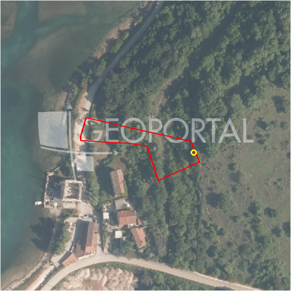

#40914 · Građevinska parcela na mirnoj lokaciji
Tar, Tar-Vabriga, Istarska · zemljiste · njuskalo · status active · oglas ↗
Ocjena
- Score
- 66 rule 66 · LLM – · 12.09.2026.
- RLV
- 1,09 M€ (828 €/m²) · ratio 6,54
- Ukupna investicija
- 2,76 M€
- GBP
- 1.049 m²
- Feedback
- –
- CRM
- –
Oglas
- Cijena
- 166.000 € (120 €/m²)
- Površina
- 1.381 m² · DKP 1.311 m² (odstupanje -5,1 %)
- Prodavatelj
- agencija · Dogma nekretnine
- Prvi put
- 11.09.2026. · zadnje 11.09.2026. · 0 d na tržištu
Povijest cijene
| Datum | Cijena |
|---|---|
| 11.09.2026. | 166.000 € |
Flagovi
zop_70_100 ZOP pojas 70/100 m (−10)zone_uncertainty zona nije pregledana (reviewed: false) (−5)
llm_pending LLM ekstrakcija/ocjena nedostupna
Komponente score-a
| rlv | {'gbp': 1048.9040000000002, 'kis': 0.8, 'nkp': 786.6780000000001, 'noi': None, 'rlv': 1085273.606086957, 'ratio': 6.537792807752753, 'value': None, 'phases': 1, 'profile': 'obala_visestambeno', 'gdv_neto': 4405396.800000001, 'cost_soft': 104890.40000000002, 'gdv_bruto': 5506746.000000001, 'kis_known': False, 'total_inv': 2756263.8400000003, 'cost_build': 2097808.0000000005, 'cost_other': 377605.44000000006, 'cost_sales': 165202.38000000003, 'demolition': False, 'gbp_source': 'kis', 'rlv_per_m2': 827.739130434783, 'parcel_area': 1311.13, 'parcelation': False, 'roi_on_cost': 0.5383848086183216, 'profit_at_ask': 1483930.5800000003, 'cost_demolition': 0.0, 'total_inv_phase': 2756263.8400000003, 'parcel_area_effective': 1311.13, 'sale_price_per_m2_nkp': 7000.0} |
| hard | [] |
| info | ['llm_pending'] |
| rubric | {'permits': {'max': 5.0, 'detail': {'permit': 'none'}, 'points': 0.0}, 'location': {'max': 15.0, 'detail': {'source': 'rlv.yaml:istra_zapad/row1', 'sale_price_per_m2_nkp': 7000.0}, 'points': 15.0}, 'physical': {'max': 4.0, 'detail': {'slope_pct': 20.67, 'road_access': 'yes', 'slope_points': 0.8659999999999997, 'sea_row1_bonus': True}, 'points': 3.87}, 'liquidity': {'max': 3.0, 'detail': {'n_cuts': 0, 'points_cut': 0.0, 'points_days': 0.008333333333333333, 'seller_type': 'agencija', 'points_fresh': 0.5, 'price_cut_pct': None, 'days_on_market': 1, 'points_private': 0}, 'points': 0.51}, 'rlv_ratio': {'max': 25.0, 'detail': {'rlv': 1085274, 'ratio': 6.538, 'asking_price': 166000.0}, 'points': 25.0}, 'ticket_fit': {'max': 10.0, 'detail': {'asking_price': 166000.0}, 'points': 4.43}, 'zone_quality': {'max': 8.0, 'detail': {'reason': 'zona nepoznata', 'source': 'nepoznato', 'zone_class': None}, 'points': 2.0}, 'profit_potential': {'max': 20.0, 'detail': {'roi_on_cost': 0.538, 'profit_at_ask': 1483931}, 'points': 20.0}, 'price_vs_benchmark': {'max': 10.0, 'detail': {'source': 'auto:Tar-Vabriga', 'deviation': 0.52, 'ask_eur_m2': 120, 'benchmark_eur_m2': 250.25}, 'points': 10.0}} |
| weights | {'llm': 0.4, 'rule': 0.6, 'model': 0.0} |
| penalties | {'zop_70_100': 10, 'zone_uncertainty': 5} |
| raw_score | 80,8 |
| rlv_notes | [] |
| flag_notes | {'max_gbp': 1049, 'zop_band': '70', 'total_inv': 2756264, 'zone_code': None, 'zone_class': None, 'zone_source': 'nepoznato', 'zone_reviewed': None} |
| caps_applied | [] |
GIS
- Čestica
- k.o. 323772, k.č. 213/5 (pin_buffer, 0,88); k.o. 323772, k.č. 213/6 (pin_buffer, 0,78); k.o. 323772, k.č. 221/1 (pin_buffer, 0,78)
- Zona
- – (–)
- kig / kis / katnost
- – / – / –
- GP / UPU
- – · UPU –
- Pristup / nagib
- yes · 20,7 % (max 23,0 %)
- More
- 7 m · red 1 · ZOP 70
- Zaštite
- Natura ne · zaštićeno ne · kulturno dobro ne
- Zgrade na čestici
- 0 %
- Match
- 0,88
Karta
Ortofoto (DOF)

RLV kalkulacija — pretpostavke
| gbp | {'value': 1048.9040000000002, 'source': 'kis'} |
| kis | {'value': 0.8, 'source': 'default_profila'} |
| sea_row | {'value': '1', 'source': 'gis'} |
| soft_pct | {'value': 0.05, 'source': 'profil'} |
| nkp_ratio | {'value': 0.75, 'source': 'profil'} |
| cost_other | {'value': 377605.44000000006, 'source': 'profil: doprinosi+uređenje po m² GBP, financiranje+rezerva % gradnje'} |
| parcel_area | {'value': 1311.13, 'source': 'dkp'} |
| asking_price | {'value': 166000.0, 'source': 'oglas'} |
| margin_on_cost | {'value': 0.15, 'source': 'profil'} |
| build_cost_per_m2_gbp | {'value': 2000.0, 'source': 'profil'} |
| sale_price_per_m2_nkp | {'value': 7000.0, 'source': 'rlv.yaml:istra_zapad/row1'} |
| transfer_tax_and_acquisition | {'value': 0.06, 'source': 'profil'} |
Ekstrakcija iz oglasa
Benchmarks mikrolokacije
| Vrsta | Vrijednost | n | Od | Izvor |
|---|---|---|---|---|
| land_ask_eur_m2 | 250 | 29 | 11.09.2026. | auto |
| newbuild_sale_eur_m2_nkp | 4.262 | 7 | 11.09.2026. | auto |
Opis oglasa
Na prodaju je građevinsko zemljište površine 1.381 m², smješteno na mirnoj lokaciji u Taru. Parcela je pravilnog oblika, što omogućuje jednostavno planiranje budućeg objekta i uređenja prostora. Zemljište se nalazi unutar naselja i idealno je za izgradnju obiteljske kuće ili kuće za odmor u mirnom okruženju. Zbog svoje pozicije i funkcionalne forme, ovo zemljište predstavlja dobru priliku za kupce koji traže mir i dovoljno prostora za realizaciju vlastitog projekta. Za više informacija, kontaktirajte nas: STEFANO PERUŠKO AGENT U POSREDOVANJU Mobitel 099/721-0395 stefano.perusko@dogma-nekretnine.com ID KOD AGENCIJE: IS1518969 Stefano Peruško Agent s licencom Mob: 099/721-0395 Tel: 052 770 811 E-mail: stefano.perusko@dogma-nekretnine.com www.dogma-istra.com